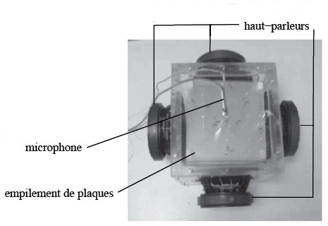
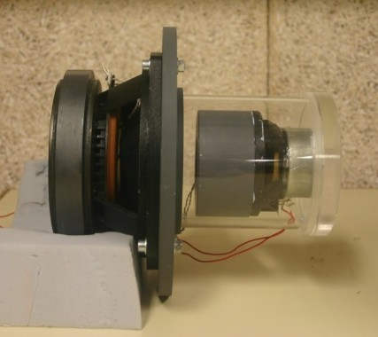
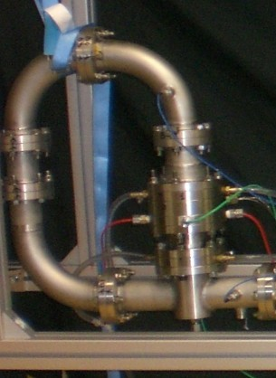
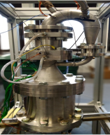
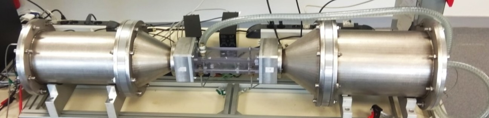
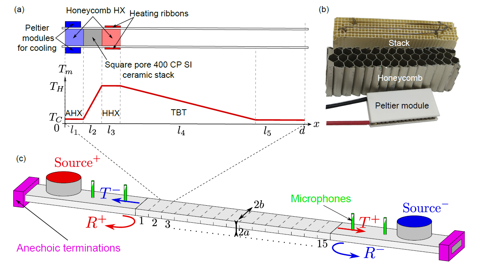

Agrandir ↗Réfrigérateur thermoacoustique compact à 4 sources, 2006
Réfrigérateur thermoacoustique compact comprenant quatre sources acoustiques.
Ingénieure en techniques expérimentales
Au Laboratoire d’Acoustique de Le Mans Université (LAUM, UMR CNRS 6613), je développe et caractérise des systèmes thermoacoustiques. Ce site présente un aperçu de mes réalisations : des machines thermoacoustiques, des montages expérimentaux et des démonstrateurs.
01 / RÉALISATIONS EXPÉRIMENTALES
Deux architectures de réfrigérateurs thermoacoustiques développées à différentes étapes des travaux.

Agrandir ↗Réfrigérateur thermoacoustique compact comprenant quatre sources acoustiques.

Agrandir ↗Le contrôle indépendant du champ acoustique au niveau du régénérateur — grâce à deux haut-parleurs et à une boucle de rétroaction — permet l'obtention d'un champ acoustique qui maximise l'efficacité thermoacoustique. Cette architecture compacte offre des performances équivalentes à celles des systèmes conventionnels, tout en réduisant considérablement l'encombrement.
Moteur thermoacoustique couplé à un alternateur pour générer de l'électricité en valorisant de la chaleur

Agrandir ↗Moteur thermoacoustique de Stirling couplé à un alternateur électrodynamique pour produire de l’électricité à partir d’une puissance thermique.
Voir le schéma explicatif ↗
Agrandir ↗Générateur d’électricité thermoacoustique fonctionnant avec de l’hélium sous une pression de 20 bars.
Bancs de caractérisation d'une partie spécifique d'une machine thermoacoustique ou des effets non linéaires y prenant place.

Agrandir ↗Le banc a pour fonction....
Voir le schéma de principe du banc ↗Exploration de configurations pour lesquelles un gradient de température le long d'un matériau poreux est mis à profit pour obtenir des propriétés de diffusion acoustique originales.
Système fondé sur l’effet thermoacoustique, combinant une unité de perte avec un piston et une unité de gain avec cœur thermoacoustique.

Agrandir ↗Absorbeur acoustique basses fréquences et large bande, exploitant l'effet thermoacoustique combiné au refroidissement par azote liquide d'un matériau poreux.
02 / DÉMONSTRATEURS
Le démonstrateur comprend un haut-parleur, un résonateur monobloc dans lequel est placé un empilement de plaques, un échangeur de chaleur froid avec une cuve instrumentée par un capteur de flux thermique, et un échangeur de chaleur ambiant.

Une démonstration vidéo présente le fonctionnement de la turbine bi-directionnelle.
Visionner la démonstration vidéo ↗Démonstrateur de moteur à piston liquide à cycle Stirling thermoacoustique.

Démonstrateur présentant la production d’électricité par effet thermoacoustique.
Voir la vidéo de présentation ↗ DIY Steel Wood Thermoacoustic Engine
Voir le tutoriel ↗
DIY Steel Wood Thermoacoustic Engine
Voir le tutoriel ↗
 DIY Rice Thermoacoustic Engine
Voir la démonstration ↗
DIY Rice Thermoacoustic Engine
Voir la démonstration ↗
03 / EN SAVOIR PLUS
Retrouver le CV HAL complet et les publications scientifiques associées.
Consulter le CV HAL ↗
Portrait officiel publié par la délégation Bretagne et Pays de la Loire du CNRS, ainsi qu’une vidéo d’hommage.
Lire le portrait CNRS ↗ Voir la vidéo d’hommage ↗
Portrait « Femmes en tête 2024 — Gaëlle Poignand » publié sur le site des Sociétés Savantes.
Lire le portrait ↗